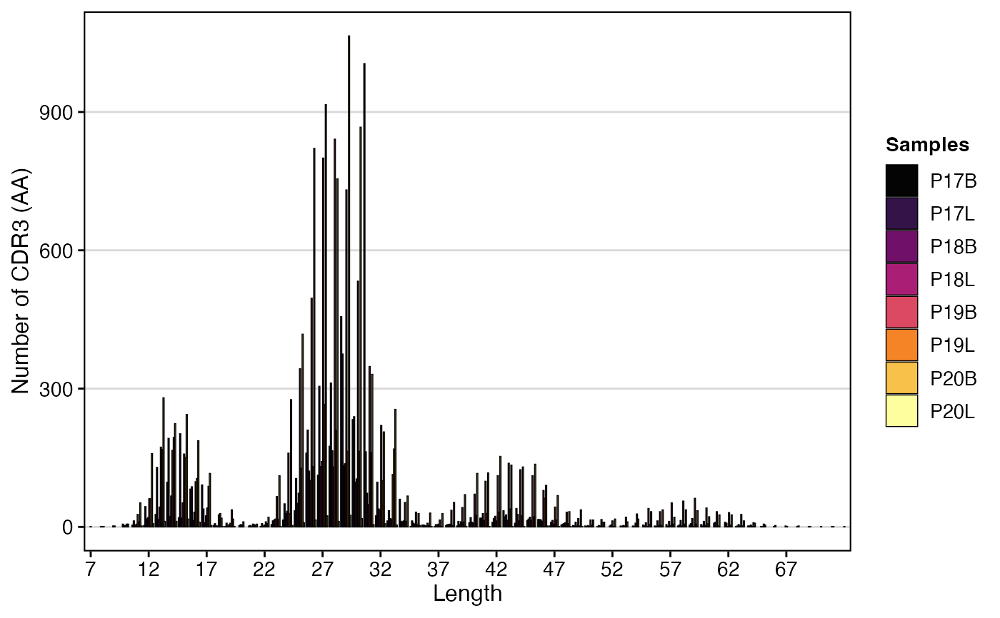

This function displays either the nucleotide (nt) or amino acid (aa) sequence length. The sequence length visualized can be selected using the chains parameter, either the combined clone (both chains) or across all single chains. Visualization can either be a histogram or if scale = TRUE, the output will be a density plot. Multiple sequencing runs can be group together using the group.by parameter.
clonalLength(
input.data,
cloneCall = "aa",
chain = "both",
group.by = NULL,
order.by = NULL,
scale = FALSE,
exportTable = FALSE,
palette = "inferno"
)The product of combineTCR,
combineBCR, or combineExpression
How to call the clone - CDR3 nucleotide (nt) or CDR3 amino acid (aa)
indicate if both or a specific chain should be used - e.g. "both", "TRA", "TRG", "IGH", "IGL"
The variable to use for grouping
A vector of specific plotting order or "alphanumeric" to plot groups in order description
Converts the graphs into density plots in order to show relative distributions.
Returns the data frame used for forming the graph.
Colors to use in visualization - input any hcl.pals
ggplot of the discrete or relative length distributions of clone sequences
#Making combined contig data
combined <- combineTCR(contig_list,
samples = c("P17B", "P17L", "P18B", "P18L",
"P19B","P19L", "P20B", "P20L"))
clonalLength(combined, cloneCall="aa", chain = "both")
